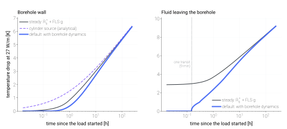
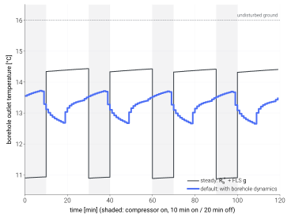

Ground response¶
How the ground-source models (Ground-source heat pump boiler (GSHPB), Ground-source heat pump (GSHP — space conditioning)) turn the heat they take from the ground into the temperature of the fluid that comes back. This page covers the response itself: the steady borehole every ground model starts from, the dynamic borehole model the models use by default, bore fields that are not a rectangular grid, and how each part was checked.
The steady model¶
Three pieces, all derived from inputs the models already take:
g-functionThe borehole-wall temperature response of the whole field to a unit load step, \(g(t)\) [m·K/W], computed once by pygfunction from finite line sources (uniform borehole-wall temperature) and superposed over the load history with step-mean weights (
tmhp.g_function.GFunction,tmhp.ground_coupling.AggregateGFunctionCoupler).- Borehole resistance
The fluid-to-wall resistance \(R_b^*\) [m·K/W] from the multipole method (pygfunction
SingleUTube, order 2) with Hellström’s correction for the fluid temperature along the depth (tmhp.borehole.calc_borehole_thermal_resistance()).- Fluid temperatures
\(\bar T_f = T_b - q' R_b^*\) and \(T_{in/out} = \bar T_f \mp Q / (2 \dot m c_p)\), with \(q'\) the extraction per metre of borehole.
This is exact for the steady state it describes and has been compared with independent references: the borehole resistance agrees with a closed-form first-order multipole within 0.1 % and with multipole order 10 within \(10^{-5}\); \(R_b^*\) and the inlet/outlet temperatures reproduce pygfunction’s pipe model to four digits; the single-borehole g-function agrees with a direct integration of the finite line source within 0.12 % from one hour on.
What it leaves out matters below about six hours:
The wall response is a line source evaluated at the borehole radius. It is valid after \(Fo = \alpha t / r_b^2 \approx 5\) (seven hours for the default borehole), and below one hour the g-function is a straight line from the origin.
The fluid-to-wall difference \(q' R_b^*\) appears at once. In a real borehole the fluid, the pipe and above all the grout store heat, and the fluid temperature takes one to three hours to move.
The fluid needs minutes to travel down and up the U-tube (nine minutes through 200 m of DN32 at 24 L/min). Until the first pass returns, the outlet does not know the heat pump has started.
With hourly steps and runs of several hours these effects are small. With minute-scale cycling the steady model swings the source temperature by \(q' R_b^*\) (3 to 5 K) at every start and stop, which a borehole does not do. The models therefore add the inside of the borehole by default (next section).
Note
Steady model below means these three pieces alone: the multipole
borehole resistance plus the finite-line-source g-function, the usual way
to compute borehole fluid temperatures, and what
borehole_dynamics=False gives. “Steady” refers to the inside of the
borehole, which is a resistance with no heat capacity. The ground is
transient in both models, and the dynamic model uses the same resistance
and the same g-function; it adds what happens inside the borehole.
Dynamic borehole model¶
GroundSourceHeatPumpBoiler (and its solar and PV variants) and
GroundSourceHeatPump replace the g-function by one that
contains the three effects. It needs no new inputs:
from tmhp import GroundSourceHeatPumpBoiler
from tmhp.borehole_capacity import enable_borehole_dynamics
model = GroundSourceHeatPumpBoiler(H_b=150.0, dt_s=600.0)
model.borehole_dynamics # 'transit': dynamic borehole, transit resolved
df = model.analyze_dynamic(...)
steady = GroundSourceHeatPumpBoiler(H_b=150.0, dt_s=600.0, borehole_dynamics=False)
enable_borehole_dynamics(model, rhoc_g=3.0e6) # the same model with a known grout
The heat capacities of fluid, pipe wall and grout default to water, HDPE
(1.8 MJ/(m³·K)) and a set, saturated grout (3.4 MJ/(m³·K));
tmhp.borehole_capacity.enable_borehole_dynamics() rebuilds the response
with other values (rhoc_g, rhoc_p). Everything else is read from the
model.
Value |
Borehole |
|---|---|
|
Dynamic wherever the model can use it, steady where it cannot (below).
Nothing is raised or warned: |
|
Dynamic, or |
|
Steady. The results are those of the models before the dynamic borehole became the default. |
The response is built for one borehole resistance and one loop flow (see Limits), so the default keeps the steady borehole when
variable_Rbor a variable ground flow (ground_flow_controlother than"constant") is used;the model was given its own
ground_coupler, which owns the response;the flow is so low that the loop temperature difference alone, \(H / (2 \dot m c_p)\), is not below \(R_b^*\) (a trickle against a supplied resistance);
the cross-section cannot be mapped onto the equivalent cylinder (pipes that fill the borehole, a supplied \(R_b\) below the fluid-to-pipe resistance).


Response to a constant extraction of 27 W/m from the default borehole
(200 m, 80 mm radius, DN32 single U-tube, 24 L/min). Left: the wall. The
dashed curve is the wall of a borehole with no heat capacity (heat
released at the wall at once); with the grout in between, the wall
responds later than even the line source. Right: the fluid leaving the
borehole. The steady model drops it by 2.8 K at the first instant; in the
dynamic model nothing changes until the first pass returns, and the two
meet after a few days. Generated by
scripts/visualization/ground_transient_response.py.¶
How it works¶
Section. The borehole cross-section is mapped onto a one-dimensional
radial model, the equivalent-cylinder model of Xu and Spitler (2006): a fluid
node, the pipes lumped at the radius \(r_{eq} = \sqrt{n}\, r_{po}\) that
keeps the grout cross-section (and so its heat capacity) exact, a grout
annulus whose conductivity is set so that the steady resistance of the model
is the \(R_b^*\) the host uses, and the ground. Log-spaced finite volumes
and backward Euler; energy is conserved to round-off
(tmhp.borehole_capacity.EquivalentCylinderBorehole).
Splice. A g-function built from line sources behaves at short times like an infinite line source at \(r_b\), which has already filled the borehole with soil. The dynamic fluid response to a unit load step is therefore (Yavuzturk and Spitler 1999)
with \(S_{cap}\) the response of the section and \(G_{ILS} = E_1(r_b^2 / 4 \alpha t) / (4 \pi k_s)\). Since \(S_{cap} \to R_b^* + G_{ILS}\), the correction vanishes at long times: after 30 days the difference from the steady model is 0.0004 m·K/W (0.01 K at 27 W/m), after a year 0.00003. In a field every borehole responds alone at these time scales, so the same correction is added to the field g-function.
Transit. The fluid is in plug flow along the U-tube and exchanges heat
with the section at every depth. In the Laplace domain one pass multiplies the
fluid temperature by \(E(s) = \exp[-(s C_f + Y(s)) H / \dot m c_p]\),
where \(Y(s)\) is the admittance of the section, so the outlet response to
a load step is \(\frac{H}{\dot m c_p} \frac{1}{s} \sum_{k \ge 1} E^k\):
nothing before one transit time \(t_{tr} = C_f H / \dot m c_p\), and the
\(k\)-th pass arriving at \(k\, t_{tr}\). The series is inverted
numerically (fixed Talbot). It is used alone for the first eight transit times
and blended into the lumped-fluid response by 24
(tmhp.borehole_capacity.loop_outlet_response()).
Local and effective resistance. \(R_b\) is the resistance of the two-dimensional cross-section. The fluid temperature needs the effective \(R_b^*\), which also contains what happens along the depth: the fluid temperature changes on its way down and up and the two legs exchange heat. Everything here settles to \(R_b^*\), not \(R_b\): the models’ relation \(\bar T_f = T_b - q' R_b^*\), the section (mapped so that its steady resistance is \(R_b^*\)) and the loop (its section is calibrated so that the circulating loop reproduces \(R_b^*\)). What differs is when the three-dimensional part appears. The loop builds it up as the fluid travels round: the inlet follows the load at once, so the mean of inlet and outlet drops by \(q' H / (2 \dot m c_p)\) immediately. The lumped section treats it as part of the grout resistance, which is slower. At the default flow the difference is small (\(R_b^*\) is 8 % above \(R_b\)); at low flow it is not:
Model |
0.5 h |
1 h |
3 h |
6 h |
12 h |
24 h |
|---|---|---|---|---|---|---|
Steady model |
8.67 |
9.09 |
10.05 |
10.73 |
11.44 |
12.17 |
Dynamic, transit resolved (default) |
6.45 |
6.91 |
8.39 |
9.41 |
10.80 |
11.85 |
Dynamic, lumped fluid ( |
3.86 |
5.35 |
7.98 |
9.54 |
10.82 |
11.85 |
The two dynamic variants hand over to each other within 2.5 % of
\(R_b^*\) at eight transit times for 6 to 24 L/min per borehole. With a
lumped fluid alone the first hours are too warm at low flow, and the models’
loop temperature difference \(Q / (2 \dot m c_p)\) appears at once: the
fluid leaving the borehole starts above where it was when extraction
begins. The models never choose it by themselves (see Limits). Inside a field with unequal depths or series circuits the
depth-resolved fluid and wall temperatures are pygfunction’s (MIFT, wall
temperature in segments along each borehole).
Drop-in kernel. tmhp.borehole_capacity.DynamicGFunction tabulates
\(K(t) = S_{dyn}(t) - R_b^*\) (referred to the outlet when the transit is
resolved). It is callable and has step_mean like the g-function, so the
models use it unchanged: their steady relations
\(\bar T_f = T_b - q' R_b^*\), \(T_{out} = \bar T_f + Q / (2 \dot m
c_p)\) then return the dynamic temperatures, exactly for piecewise-constant
loads. Two consequences for the result columns:
T_bhe_f_outandT_bhe_f_inare the dynamic outlet and inlet;T_bhe_fis their mean.T_bhe(andmodel.T_bhe) is the physical borehole wall, the superposition of the same loads with the wall response (DynamicGFunction.wall_step_mean). The value the fluid temperatures are computed from is the fluid-referenced wall \(\bar T_f + q' R_b^*\), the wall the fluid would need in steady state. It is not reported: it equals the physical wall once the borehole has settled, but jumps by \(q' R_b^*\) at every start and stop, above the undisturbed ground when extraction begins. The solar ground-charging variants take the wall as their collector inlet, so they read the physical one too.
A compressor that runs part of a step¶
The boilers let the thermostat switch inside a step: a row can report a compressor that ran for a fraction \(f\) of it. The ground history keeps the step-average load \(f\,q'_{run}\), while the fluid the compressor sees carries the running load \(q'_{run}\). With the step-average response only the share \(f\) of the steady terms would be cancelled, and \((1 - f)\, q'_{run} (R_b^* - H / 2 \dot m c_p)\) would appear at the first instant: 70 % of the steady model’s drop for a compressor that runs 30 % of the step.
The models therefore ask the coupler for the response over the run itself,
\([t_n, t_n + f\,\Delta t]\), under the running load
(preview_wall_temperature_rise(n, time, q_run, window_s=f * dt)):
with \(\bar K(\tau; w)\) the mean of the kernel over \([\tau, \tau + w]\). The running fluid is then continuous in \(f\): it tends to the fluid at \(t_n\) as the run vanishes and equals the whole-step value at \(f = 1\). Pulses of the last six hours are integrated exactly over the window; older ones use the step-mean table with a correction that takes the response as linear across one step (error under 0.001 K).
Step, run share |
Largest error, run window |
Largest error, step-average load |
Steady model |
First run, run window |
|---|---|---|---|---|
600 s, 0.3 |
0.07 |
0.45 |
0.64 |
0.000 |
600 s, 0.7 |
0.04 |
0.20 |
0.65 |
0.000 |
3600 s, 0.3 |
0.08 |
0.48 |
0.58 |
0.002 |
60 s, 0.5 |
0.02 |
0.32 |
0.65 |
0.000 |
The first run is exact; what is left afterwards is the history, which records a run at the start of a step as its step average. The run is taken as one block at the start of the step. A thermostat that starts the compressor late in a step starts it from a borehole at rest, for which the position inside the step does not matter; the step after it sees that start spread over the whole step, which is the residual in the table.
Checks¶
All numbers are for the default borehole and 27 W/m. The same comparisons
run in tests/test_borehole_capacity.py with tolerances, some at a coarser
resolution than the tables.
Time |
Steady model |
Finite line source |
Cylinder source (analytical) |
Dynamic, capacity off |
Dynamic |
|---|---|---|---|---|---|
1 min |
0.01 |
0.00 |
0.25 |
0.25 |
0.00 |
10 min |
0.14 |
0.04 |
0.72 |
0.72 |
0.00 |
1 h |
0.84 |
0.84 |
1.51 |
1.51 |
0.39 |
6 h |
2.48 |
2.48 |
2.78 |
2.78 |
2.09 |
1 d |
3.92 |
3.92 |
4.04 |
4.04 |
3.76 |
10 d |
6.36 |
6.36 |
6.40 |
6.38 |
6.34 |
With the heat capacity switched off the dynamic wall is the analytical hollow-cylinder source (Carslaw and Jaeger 1959) from the first minute; the analytical integral itself agrees with a numerical inversion of its Laplace transform to \(10^{-7}\). With heat capacity the wall responds later than the line source: the heat has to cross the grout first.
Time |
Steady model |
Dynamic (finite volumes) |
Laplace solution of the section |
|---|---|---|---|
1 min |
4.45 |
0.32 |
0.32 |
10 min |
4.58 |
1.78 |
1.78 |
1 h |
5.28 |
3.87 |
3.87 |
6 h |
6.91 |
6.33 |
6.33 |
1 d |
8.35 |
8.15 |
8.15 |
10 d |
10.80 |
10.77 |
10.77 |
The Laplace solution uses the analytical admittance of the continuous section (Bessel functions) and shares no code with the finite-volume march; the two agree within 0.0002 m·K/W (0.1 % of \(R_b^*\)) at the default resolution and 0.00005 at a finer one.
\(t / t_{tr}\) |
Laplace series |
Time-domain finite volumes |
Outlet drop at 27 W/m [K] |
|---|---|---|---|
0.50 |
0.00000 |
0.00000 |
0.00 |
1.50 |
0.02818 |
0.02822 |
0.76 |
2.50 |
0.04601 |
0.04612 |
1.24 |
4.00 |
0.06468 |
0.06481 |
1.75 |
The time-domain reference marches 400 upwind segments along the pipe, each
with its own radial chain (tests/_borehole_oracle.py); the gap halves with
the segment size, as a first-order scheme should.
Against a model with more physics there are two published comparisons of the
section this module ports. The port is bit-identical to
geolink.borehole.equivalent_cylinder at equal resolution, and that
implementation was compared in geolink’s technical note with a load-driven 2-D
finite-element model of the real cross-section (pipes in place, no
equivalent cylinder): for most DN32 sections the correction is within 5 % of
\(R_b\) between 0.5 h and 2 h and within about 2 % after 4 h. The
exceptions are a 0.2 m borehole with low-conductivity grout (7.4 %, on the
conservative side) and pipes close to the wall of a 0.2 m borehole (4.6 %,
on the other side). That comparison mapped the section to the local
resistance; here it is mapped to the effective \(R_b^*\) the models use
(0.164 against 0.153 m·K/W for the default borehole), which was not part of
it. Against
GHEDesigner’s short-time-step response (the same model family) it differs by
2 to 5.5 % of \(R_b\) at one hour and under 0.0006 m·K/W after a day.
How long the difference lasts¶
The two models describe the same borehole in the same ground, so they must agree eventually. They do, but slowly: the difference decays like \(\ln t / t\), not exponentially.
Time |
\(\alpha t / r_b^2\) |
Steady [K] |
Dynamic [K] |
Difference [K] |
Heat still stored in the borehole |
|---|---|---|---|---|---|
1 h |
1 |
5.28 |
3.87 |
−1.41 (27 %) |
84 % |
6 h |
4 |
6.92 |
6.33 |
−0.58 (8 %) |
38 % |
24 h |
17 |
8.36 |
8.16 |
−0.20 (2.4 %) |
15 % |
100 h |
70 |
9.88 |
9.82 |
−0.06 (0.6 %) |
5 % |
10 d |
169 |
10.82 |
10.79 |
−0.03 (0.3 %) |
2.2 % |
30 d |
506 |
12.00 |
11.99 |
−0.01 (0.1 %) |
0.9 % |
The last column is the share of all heat extracted so far that came out of the fluid, pipes and grout rather than the ground. A line-source g-function evaluated at \(r_b\) treats the borehole as if it were filled with soil. The real borehole holds more heat (68 kJ/(m·K) against 32 for the soil it replaces, with the defaults) and its inside sits \(q' R_b\) away from the wall temperature, so it has more heat to give up before the ground carries the whole load. The ground therefore lags by a few hours of load, and a line source that lags by \(\Delta t\) differs by about \(q' \Delta t / (4 \pi k_s t)\). The finite-volume values in the table agree with the Laplace solution of the same section to 0.001 K at every row, so the tail is a property of the model, not of its discretisation.
How large it is depends on the borehole. The default one makes it large: it is wide (160 mm) and sits in light soil (1.6 MJ/(m³·K)), so the borehole holds twice the heat of the soil it replaces.
Borehole |
1 h |
6 h |
24 h |
100 h |
|---|---|---|---|---|
Default (r_b 80 mm, soil 1.6, grout 3.4 MJ/(m³·K)) |
−1.41 |
−0.58 |
−0.20 |
−0.06 |
Default with water-rich bentonite grout, 3.9 |
−1.52 |
−0.70 |
−0.25 |
−0.07 |
Default with grout 3.0 |
−1.31 |
−0.49 |
−0.17 |
−0.05 |
Default with grout 2.5 (below the measured range) |
−1.17 |
−0.37 |
−0.12 |
−0.04 |
110 mm borehole in rock (k_s 3.0, 2.2 MJ/(m³·K)), grout 3.4 |
−0.79 |
−0.16 |
−0.05 |
−0.01 |
The grout heat capacity is the one input of the dynamic model that the
steady model never needed. The default, 3.4 MJ/(m³·K), is the middle of what
has been measured on set, water-saturated grouts: 3.0 to 3.6 for seven
commercial cement-based and thermally enhanced grouts (Albers et al. 2024),
3.84 for a bentonite-based grout (Javed 2010). A saturated grout is water
(4.18) plus solids (2.0 to 2.3), so a value much below 3.0 would mean less
than 40 % water by volume. Pass rhoc_g when the grout is known; between
3.0 and 3.9 the fluid temperature at one hour changes by 0.2 K (27 W/m).
What changes in a run¶


GroundSourceHeatPumpBoiler (8 kW defaults with a water loop, 24 L/min
through the borehole) with 60 s steps, 10 min on / 20 min off, second day of
operation. The steady model puts the outlet 3.5 K lower the moment the
compressor starts. In the dynamic model the outlet holds for
one transit and then falls by under 1 K. While the compressor is off the
reported outlet is that of a loop that keeps circulating (the cold fluid
of the last run is still on its way out); the model does not use it.¶
Case |
Model |
Outlet while running [°C] |
Lowest outlet while running [°C] |
COP (heat / compressor + pump) |
|---|---|---|---|---|
10 min on / 20 min off, 60 s steps, day 2 |
steady |
10.76 |
10.61 |
5.81 |
dynamic |
13.43 |
12.96 |
6.21 |
|
1 h on / 2 h off, 60 s steps, day 2 |
steady |
10.97 |
10.64 |
4.82 |
dynamic |
12.73 |
11.66 |
4.99 |
|
DHW draws morning and evening, 600 s steps, 48 h |
steady |
12.12 |
11.22 |
3.46 |
dynamic |
13.76 |
12.17 |
3.54 |
(“Outlet while running” is T_bhe_f_out_running, the fluid the compressor
sees; “steady” is borehole_dynamics=False.) The compressor sees a source
1.6 to 2.7 K warmer while it runs, and the COP is 2 to 7 % higher, most for
the shortest runs. The difference shrinks with longer runs: the first hours
of any run are warmer than the steady model says, the days after are the
same.
Case |
Model |
Outlet while running [°C] |
COP (load / compressor + pump) |
|---|---|---|---|
Heating, ground at 16 °C |
steady |
10.64 |
3.92 |
dynamic |
12.66 |
4.05 |
|
Cooling, ground at 16 °C |
steady |
24.66 |
4.82 |
dynamic |
21.24 |
5.40 |
In cooling the heat goes into the ground and the steady model raises the source at once; the borehole’s heat capacity lowers the condensing temperature of short runs by more than it raises the evaporating temperature in heating, because the rejected heat (load plus compressor) is larger than the extracted heat.
Limits¶
One-dimensional section. The pipe layout enters through \(R_b\) only; see the finite-element comparison above for the size of the error.
One flow, one resistance. The kernel cancels the models’ steady terms \(q' R_b\) and \(Q / (2 \dot m c_p)\) at the first instant, for the flow it was built with. With
variable_Rbor a variable ground flow the models keep the steady borehole, andenable_borehole_dynamicsrefuses them. Itstransit=False(a lumped fluid, which does not depend on the flow) is accepted with variable flow but is not a default: the loop temperature difference is then not cancelled, and in a run of the default boiler withground_flow_control="optimal_power"(the controller settles at half the reference flow) the fluid entering the heat pump is up to 2.2 K above the undisturbed ground while heat is extracted. The steady borehole is 1.8 K below it at that moment, on the conservative side. A response that follows the flow needs a time-marched loop.Runs inside a step. The history holds step-average loads. A run that covers part of a step is resolved for that step only (see “A compressor that runs part of a step”); in the steps after it the fluid is off by up to 0.08 \(R_b^*\) per unit load (0.35 K at 27 W/m).
A loop that keeps circulating. Superposition needs one linear system, so the fluid is taken to circulate also while the heat pump is off. A time-marched loop that circulates agrees with the kernel within 1 % of \(R_b\). A pump that stops leaves the fluid standing, and the outlet then moves less than the model says: over 10 min on / 20 min off the mean over a run is 2.5 to 4.4 % of \(R_b\) smaller from the second run on (still growing at the sixth), and 12 % smaller (0.5 K at 27 W/m) in the first minute after a restart. The model is on the cold side for extraction (
tests/test_borehole_capacity.py).Circuits of different length. In a field the transit uses the mean circuit (total length over the number of circuits).
Borehole only. The fluid in headers, in horizontal runs and in the heat pump adds heat capacity and transit time that are not modelled.
Constant ground temperature. As in the steady model: no seasonal surface wave and no geothermal gradient.
Bore fields and pipe configurations¶
The models take a rectangular N_1 × N_2 field of equal single-U
boreholes. Anything else is set up with tmhp.borefield and handed to
the model; the physics is pygfunction’s (Cimmino’s g-functions and network
model), already a dependency.
from tmhp import GroundSourceHeatPumpBoiler
from tmhp.borefield import BoreField, FieldGroundResponse
from tmhp.borehole import BoreholePipe
field = BoreField.from_coordinates(
[(0, 0), (6, 0), (3, 5)], H=[150.0, 200.0, 100.0]) # any positions, any depths
response = FieldGroundResponse(
field, BoreholePipe(kind="double_u_parallel", D_s=0.04),
k_s=2.0, alpha_s=1.25e-6,
m_flow_total=1.2, # kg/s through the whole field
t_max_s=10 * 8760 * 3600)
model = GroundSourceHeatPumpBoiler(**response.model_kwargs(), hp_capacity=12000.0)
response.attach(model)
model_kwargs() gives the model the borehole count, the mean depth (so that
its total length is the field’s), the field resistance and the flow;
attach replaces the model’s rectangular g-function and checks that the
two describe the same field. The borehole stays dynamic, now with the heat
capacity and transit of this field’s pipes and circuits
(attach(model, borehole_dynamics=False), or a model constructed with
borehole_dynamics=False, gives the steady borehole).
BoreFieldPositions, per-borehole depth and buried depth:
from_coordinates,rectangle, and pygfunction’sl_shape,u_shape,box,circle.BoreholePipesingle_u(default, the models’ pipe),double_u_parallel,double_u_seriesandcoaxial.connectivityWhich boreholes are in series, in pygfunction’s convention:
-1is fed from the header,jis fed by the outlet of boreholej. Every circuit receives an equal share of the flow.- Boundary condition
'auto'keeps the uniform wall temperature (UBWT) of the default path when all boreholes are in parallel and equally deep, and otherwise uses mixed inlet fluid temperature (MIFT, Cimmino 2015): the boreholes share one inlet temperature and are coupled through the fluid. Its g-function is defined with the effective wall temperature that makes \((T_{in} + T_{out})/2 = T_b^* - q' R_{field}\) hold with the network’s field resistance, which is the relation the models use.- Load shares
response.borehole_load_shares(t)is the fraction of the field load each borehole carries after a load step. The models still see one field temperature; the shares say how unevenly the ground is used.
Pipe |
Local \(R_b\) |
Effective \(R_b^*\) |
|---|---|---|
Single U-tube DN32, legs 25 mm off axis (default) |
0.1529 |
0.1644 |
Double U-tube DN32 in parallel, legs 40 mm off axis |
0.0826 |
0.1007 |
Double U-tube DN32 in series, legs 40 mm off axis |
0.0817 |
0.1042 |
Coaxial, 110 mm outer pipe, flow down the annulus |
0.1017 |
0.1641 |
Each value equals a direct pygfunction calculation
(tests/test_borefield.py). The coaxial pipe loses its low local resistance
over 200 m: the inner pipe is not insulated from the annulus.
Field |
1 h |
1 d |
1 y |
30 y |
\(R\) |
|---|---|---|---|---|---|
2 × 2, 200 m, 96 L/min, |
0.0311 |
0.1450 |
0.4817 |
0.8850 |
0.1644 |
same, |
0.0312 |
0.1450 |
0.4826 |
0.8950 |
0.1644 |
3 boreholes of 150 / 200 / 100 m, 72 L/min ( |
0.0313 |
0.1454 |
0.4405 |
0.6946 |
0.1630 |
2 boreholes of 200 m in parallel, 48 L/min |
0.0311 |
0.1450 |
0.4164 |
0.6302 |
0.1644 |
same two in series, 24 L/min |
0.0277 |
0.1346 |
0.4024 |
0.6194 |
0.1861 |
same two in series, 48 L/min |
0.0302 |
0.1421 |
0.4130 |
0.6304 |
0.1607 |
For a rectangle the field route reproduces the models’ own g-function to
\(10^{-12}\), and a boiler built either way gives the same run. MIFT
differs from UBWT by 1 % after 30 years for the 2 × 2 field. In the
three-borehole field the 200 m borehole carries 45 % of the load after 30
years against 44 % of the length, and the 100 m one 22.0 % against 22.2 %; in
a 3 × 3 field a corner borehole carries 13.2 %, the centre one 6.8 %. Two
boreholes in series at half the flow have a higher resistance (0.186 against
0.164) and the first borehole takes 56 % of the load.
Three things to know:
Flow is per field.
m_flow_totalis shared by the circuits, and the resistance depends on it strongly: four boreholes sharing the single-bore default of 24 L/min run laminar and have \(R = 0.306\) instead of 0.164 m·K/W at 96 L/min. The rectangular arguments of the models behave the same way.One flow. The field resistance and a
MIFTg-function hold for the flow they were built with, soattachrequires constant ground flow.pygfunction’s solver. Boreholes are passed to pygfunction sorted by depth: its default
'equivalent'solver assigns interleaved depths to the wrong clusters (depths 100/200/100/200/100 m on a line come out 5 % off). With that solver the load shares are per group of similar boreholes;method='similarities'resolves every borehole.
Groundwater flow, and responses pygfunction does not compute, come from the
optional geolink package through
tmhp.integrations.geolink.geolink_gfunction(), which returns a
g-function for the same chain. tmhp does not depend on it. geolink’s own
backend, geolink.coupling.NetworkGroundCoupler, can be given to the
boiler as ground_coupler instead (geolink main 5cff1aa1 or later);
tmhp.integrations.geolink says when to use which, and that the total
borehole length must be the same on both sides.
References¶
Albers, A., Huttenloch, P., Zorn, R., Steger, H., & Blum, P. (2024). Determination of thermal properties of grouting materials for borehole heat exchangers (BHE). Geothermal Energy, 12, 36. https://doi.org/10.1186/s40517-024-00316-3
Carslaw, H. S., & Jaeger, J. C. (1959). Conduction of Heat in Solids (2nd ed.). Oxford University Press.
Cimmino, M., & Bernier, M. (2014). A semi-analytical method to generate g-functions for geothermal bore fields. International Journal of Heat and Mass Transfer, 70, 641-650.
Hellström, G. (1991). Ground Heat Storage: Thermal Analyses of Duct Storage Systems. University of Lund.
Javed, S. (2010). Design of ground source heat pump systems: Thermal modelling and evaluation of boreholes (Licentiate thesis, Technical report D2010:02). Chalmers University of Technology.
Xu, X., & Spitler, J. D. (2006). Modeling of vertical ground loop heat exchangers with variable convective resistance and thermal mass of the fluid. Proceedings of Ecostock 2006.
Yavuzturk, C., & Spitler, J. D. (1999). A short time step response factor model for vertical ground loop heat exchangers. ASHRAE Transactions, 105(2), 475-485.
API¶
The reference for tmhp.borehole_capacity, tmhp.g_function and
tmhp.ground_coupling is on
Heat transfer & exchangers.